صندوق الترقية الذكي SDP Retrofit Kit: عتاد صناعي متكامل لبيئة الصحراء
بدلاً من استبدال محور الرش القائم، صممنا وحدة أتمتة صناعية معيارية تركب مباشرة على لوحة قيادة أي محور (Valley, Lindsay, Bauer أو المحاور المصنعة محلياً) وتدمج حساسات التدفق المائي، رطوبة التربة، والطاقة الشمسية.
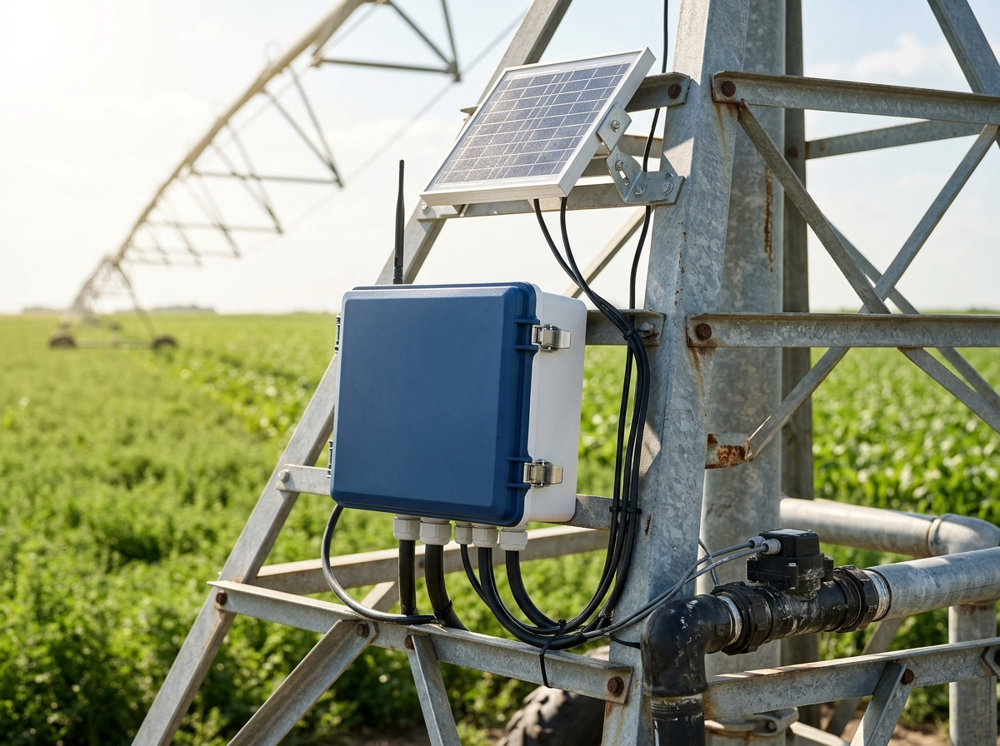
المكونات الفعلية للنموذج الأولي والنسخة الصناعية
تضم البطاقات التالية الصور الفوتوغرافية الحقيقية الملتقطة في المخبر لحساسات التدفق والألواح الشمسية وهيكل الألومنيوم، إلى جانب بقية مكونات المنظومة:

1. حساس تدفق المياه (Water Flow YF-S201C)
يقيس معدل التدفق الفعلي (1–30 L/min) وضغط المياه (حتى 1.75 MPa) لكشف أي انسداد أو تسرب في أنابيب المحور لحظياً.
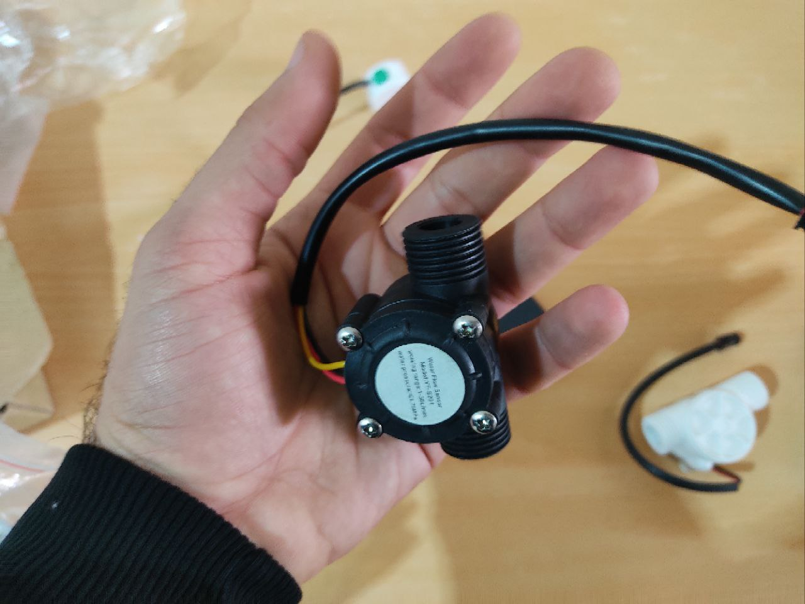
2. منظومة قياس التدفق المزدوجة (Hall-Effect Flow)
معايرة نبضات التدفق المائي في المخبر لربطها بحساب الكمية الدقيقة الموزعة بالمتر المكعب لكل قطاع.

3. اللوح الشمسي ومنظم الشحن (Solar + PWM/MPPT)
خلية الطاقة الشمسية الفعلية مع منظم الشحن لتغذية عقد الاستشعار ولوحة التحكم باستقلالية تامة في الصحراء.

4. الهيكل الميكانيكي المصنع من الألومنيوم
ذراع الجمالون الميكانيكي (420mm + 250mm) وبرج القيادة المتحرك بارتفاع 150mm وعرض 140mm.
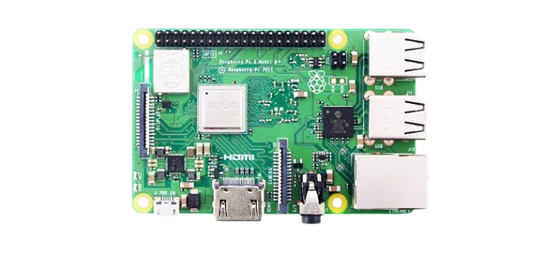
5. وحدة المعالجة المركزية (Raspberry Pi / ESP32)
تعالج قراءات الحساسات وتحسب معادلة البخر-نتح وترسل أوامر التشغيل للسحابة وقواطع المحرك.
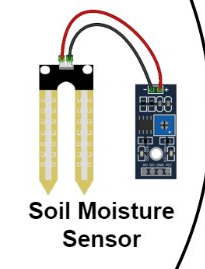
6. مجس رطوبة وملوحة التربة (Soil VWC/EC)
يقيس الرطوبة الحجمية في منطقة الجذور لمنع الضخ الزائد أو العطش المائي.
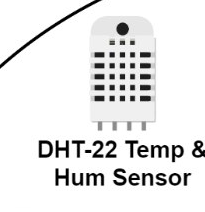
7. حساس الحرارة والرطوبة الجوية (DHT-22)
يرصد حرارة الجو والرطوبة النسبية لتقدير الفاقد الحراري اللحظي.
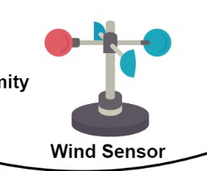
8. مقياس سرعة الرياح (Wind Anemometer)
يفصل الرش آلياً عند هبوب العواصف الرملية التي تتجاوز 45 كم/ساعة.
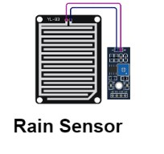
9. حساس هطول الأمطار (Rain Cut-off)
يكتشف الزخات المطرية لإيقاف المضخة فوراً وتوفير 100% من الطاقة.
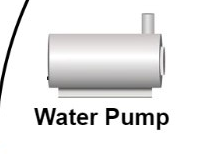
10. مضخة الضخ والتحكم التناسبي
وحدة الضخ التي يتحكم فيها النظام بالتزامن مع حساس التدفق YF-S201C.
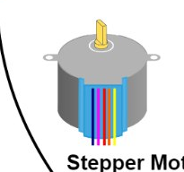
11. محرك دوران الأبراج (Tower Drive Motor)
يضبط سرعة دوران ذراع البيفو لتغيير معدل السقي حسب حاجة كل قطاع.
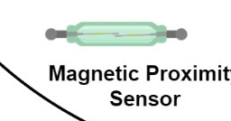
12. حساس التموضع المغناطيسي والزوايا
يرصد زاوية ذراع المحور ونقاط التوقف الآمن بدقة عالية.
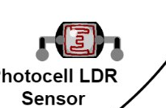
13. حساس شدة الإشعاع الشمسي (LDR)
يفاضل بين ذروة السطوع النهاري وفترات السقي الليلي عالي الكفاءة.
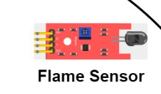
14. حساس الحماية من حرائق المحاصيل
حماية استباقية لحقول القمح والشعير الجافة وقت الحصاد في الصحراء.